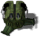
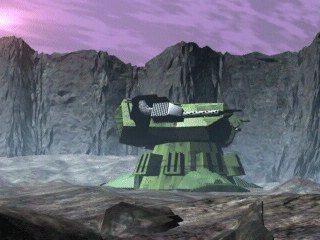

Бункер


Панель информации в игре
- Энергии треб.:
- 400
- Энергия (HP):
- 1000
- Макс. число рабочих:
- 5?
- Время постройки:
- 18 с?
- Ударная сила:
- 12
| Оружие | Мощь | Дальность | Цели |
|---|---|---|---|
| Штурмовая пушка | 12 | 1-6 | ЗВ |
Затраты: Экстракт 600 Железо 500 Уголь 350 Титан 0
Описание
Базовое оборонительное сооружение, обеспечивающее защиту от вражеских атак. В силу малой дальности стрельбы против артиллерийских ударов и ионного оружия следующего поколения оно дает лишь ограниченную защиту. Оснащено 14-мм автоматической пушкой, эффективно стреляющей по наземным и воздушным целям.
Связанное
- Требует
- Пионер, Фабрика
- Оружие
- Штурмовая пушка
Параметры конфигурации, которых нет в игре (10)
SIGHT- 6
BUILDER- 20
TRACE- 2
HEIGHT- 1
COMPONENT_QUANT- 1
SPRITE_QUANTITY- 1
TYPE- R_hBUNK
AIBLD- AIBLD_TURRET0
ANIM_P- 0: 100
AREA- 1, 0, 0, 0, 0, 0, 0, 0, 0, 0, 0, 0, 0, 0, 0, 0, 0, 0, 0, 0, 0, 0, 0, 0, 0, 0, 0, 0, 0, 0, 0, 0, 0, 0, 0, 0, 0, 0, 0, 0, 0, 0, 0, 0, 0, 0, 0, 0, 0, 0, 0, 0, 0, 0, 0, 0, 0, 0, 0, 0, 0, 0, 0, 0, 0, 0, 0, 0, 0, 0, 0, 0, 0, 0, 0, 0, 0, 0, 0, 0, 0, 0, 0, 0, 0, 0, 0, 0, 0, 0, 0, 0, 0, 0, 0, 0, 0, 0, 0, 0